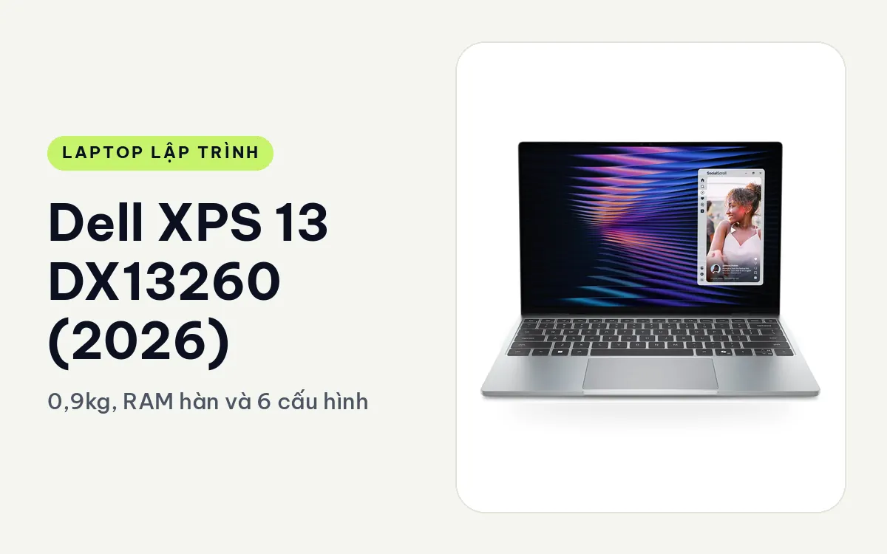
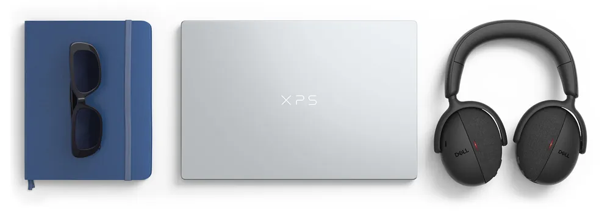
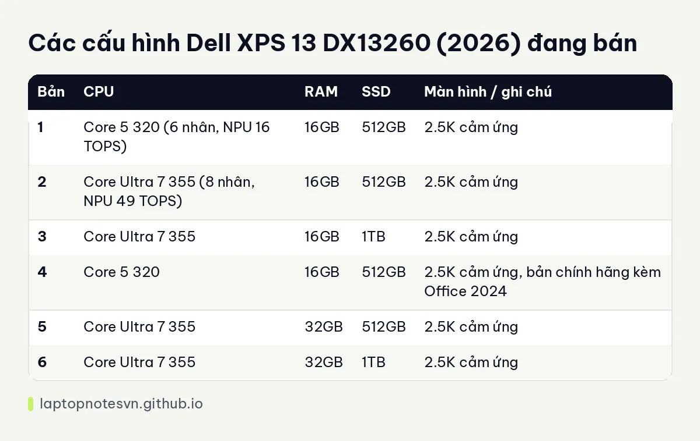

Dell XPS 13 DX13260 (2026) cho lập trình - 0,9kg, RAM hàn và 6 cấu hình

Dell XPS 13 DX13260 (2026) là ultrabook 13.4 inch nặng khoảng 0,9kg, dày 12,7mm, vỏ nhôm CNC. Với người viết code, ưu tiên của máy này là gọn, nhẹ và pin lâu hơn là sức mạnh tính toán. Hợp nhất với sinh viên, lập trình web front-end, người viết script và người hay code ở quán hoặc trên đường công tác.
Máy đang bán ở Hưng Phát Laptop với 6 cấu hình, chia thành hai nhánh chip: Intel Core 5 320 và Core Ultra 7 355. Bài này đi qua thiết kế, chuyện mang máy, rồi chỉ ra bản nào hợp kiểu code nào, kể cả những kiểu nên bỏ qua máy này.
Thiết kế nhìn từ góc người gõ phím cả ngày
Thân máy nhôm CNC nguyên khối, cạnh cắt vuông vức. Dell có hai màu là Sky (xanh khói nhạt) và Storm (xám đậm). Bên trong vẫn nhét được tản nhiệt hai quạt dù thân chỉ dày 12,7mm, điều đáng để ý với dân build dự án vì chip ít bị bóp xung sớm hơn các máy mỏng chỉ có một quạt.

Màn hình 13.4 inch tỷ lệ 16:10, độ phân giải 2.5K (2560 x 1600), cảm ứng, tần số quét 30-120Hz, 500 nits, phủ 100% DCI-P3. Tỷ lệ 16:10 cho thêm vài dòng code so với màn 16:9 cùng cỡ. Độ phân giải cao giúp chữ trong editor sắc, nhưng 13 inch vẫn hơi chật nếu bạn muốn mở editor, terminal và trình duyệt cạnh nhau.
Bàn phím có đèn nền, touchpad rộng, webcam 1080p có cảm biến hồng ngoại để đăng nhập Windows Hello. Cổng thì tối giản: hai cổng USB Type-C ở hai cạnh. Bản Core 5 320 dùng USB-C thường, bản Core Ultra 7 355 là hai cổng Thunderbolt 4. Máy không có USB-A và không có jack tai nghe 3,5mm, nên bạn cần một hub USB-C nếu còn dùng chuột USB, USB boot hay tai nghe có dây. Máy có Wi-Fi 7.
Mang đi hằng ngày
0,9kg nghĩa là bạn quên mất máy còn trong balo. Pin 52Wh, Dell công bố xem video tới khoảng 17 giờ; thực tế khi chạy IDE, trình duyệt nhiều tab và container thì con số sẽ thấp hơn nhiều, nhưng một buổi làm việc ngoài văn phòng mà không cần mang sạc là chuyện hợp lý. Màn hình hạ về 30Hz khi đọc tài liệu giúp tiết kiệm pin thêm.
Điểm trừ cần biết trước: RAM LPDDR5X hàn trên bo mạch, không nâng cấp được. Bản Core 5 320 tối đa 16GB, bản Core Ultra 7 355 có 16GB hoặc 32GB. Chọn sai dung lượng là kẹt với nó suốt vòng đời máy. Bạn có thể xem thêm cách tính trong bài lập trình viên cần bao nhiêu RAM.
Có 6 cấu hình
| Bản | CPU | RAM | SSD | Màn hình / ghi chú |
|---|---|---|---|---|
| 1 | Core 5 320 (6 nhân, NPU 16 TOPS) | 16GB | 512GB | 2.5K cảm ứng |
| 2 | Core Ultra 7 355 (8 nhân, NPU 49 TOPS) | 16GB | 512GB | 2.5K cảm ứng |
| 3 | Core Ultra 7 355 | 16GB | 1TB | 2.5K cảm ứng |
| 4 | Core 5 320 | 16GB | 512GB | 2.5K cảm ứng, bản chính hãng kèm Office 2024 |
| 5 | Core Ultra 7 355 | 32GB | 512GB | 2.5K cảm ứng |
| 6 | Core Ultra 7 355 | 32GB | 1TB | 2.5K cảm ứng |
Cả sáu bản đều dùng đồ họa tích hợp Intel Graphics, SSD PCIe Gen4 và cùng một màn hình. Khác biệt nằm ở chip, RAM và ổ cứng.

Bản 1, Core 5 320 / 16GB / 512GB
Đây là bản rẻ nhất và đủ cho học code, web tĩnh, React hoặc Vue cỡ nhỏ, Python, Node.js, Java bài tập, thao tác Git và SSH vào server. Chip 6 nhân 6 luồng chạy tốt các việc đó. Giới hạn khá rõ: một vài container Docker cùng IDE nặng sẽ ngốn gần hết 16GB, và Android Studio kèm emulator sẽ làm máy chậm. Nếu hướng tới mobile hoặc microservice thì nên nhảy lên bản 32GB.
Bản 4, Core 5 320 / 16GB / 512GB, chính hãng kèm Office 2024
Phần cứng giống bản 1, khác ở chỗ là hàng chính hãng và đi kèm Office 2024. Hợp sinh viên vừa học code vừa phải soạn báo cáo, slide. Về kiểu lập trình, bản này nằm cùng nhóm với bản 1: web, script, học thuật toán, không phải nơi chạy container nặng.
Bản 2, Core Ultra 7 355 / 16GB / 512GB
Thêm 2 nhân và NPU khoảng 49 TOPS đạt chuẩn Copilot+ PC. Với dân code, nhân thêm giúp biên dịch và chạy test song song nhanh hơn một nhịp, còn NPU chủ yếu hữu ích khi bạn thử các tính năng AI cục bộ của Windows. Hai cổng Thunderbolt 4 cho phép cắm một màn hình ngoài và sạc cùng lúc qua dock. Bản này hợp lập trình web full-stack, API backend, script tự động hóa, nếu bạn chấp nhận 16GB.
Bản 3, Core Ultra 7 355 / 16GB / 1TB
Cùng RAM với bản 2 nhưng ổ 1TB. Hợp người giữ nhiều repo, node_modules, image Docker cũ và dataset nhỏ trên máy. Nếu kho dự án của bạn nặng mà việc chạy chỉ ở mức vừa, đây là bản cân đối hơn bản 512GB.
Bản 5, Core Ultra 7 355 / 32GB / 512GB
Bản dành cho người chạy Docker Compose vài dịch vụ, cơ sở dữ liệu cục bộ, máy ảo nhẹ hoặc Android emulator cạnh IDE. 32GB cho phép mở những thứ này cùng lúc mà không phải đóng bớt. Ổ 512GB là chỗ phải để ý: image Docker và SDK Android dễ lấp đầy.
Bản 6, Core Ultra 7 355 / 32GB / 1TB
Cấu hình cao nhất của dòng. Tôi xếp nó cho người muốn một chiếc máy 0,9kg mà vẫn có thể làm full-stack nặng, mobile hoặc data nhẹ với pandas và notebook. Giới hạn còn lại là GPU tích hợp, nên huấn luyện mô hình cần CUDA hoặc render 3D không phải đất của máy này. Muốn làm những việc đó, hãy xem các dòng có card rời như Dell Pro Max 16 MC16250.
Nên chọn bản nào
- Sinh viên, học code, web nhẹ: bản 1 hoặc bản 4.
- Full-stack và backend làm việc hằng ngày: bản 2, hoặc bản 3 nếu kho dự án lớn.
- Docker nhiều dịch vụ, Android Studio, máy ảo: bản 5 hoặc bản 6.
- CUDA, game, đồ họa 3D: chọn dòng khác.
Tóm lại, XPS 13 là máy để mang đi và gõ code ở bất cứ đâu, với RAM là quyết định khó đảo ngược nhất. Nếu còn phân vân giữa 16GB và 32GB, hãy chọn 32GB. Máy có sẵn tại Dell XPS 13 DX13260 (2026) ở Hưng Phát Laptop.
Đăng ngày 08/11/2026